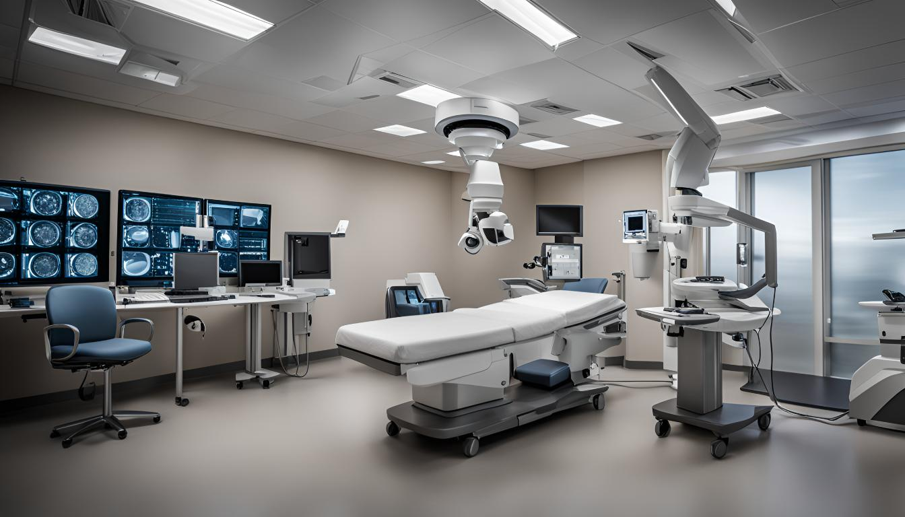

20/02/2025
Sağlık Sektöründe Görüntü İşleme Radyolojiden Teşhise Yeni Yaklaşımlar
Sağlık sektöründe görüntü işleme teknolojileri, son yıllarda ivme kazanarak radyoloji ve teşhis alanlarında devrim yaratmıştır. Sağlık Sektöründe Görüntü İşleme: Radyolojiden Teşhise Yeni Yaklaşımlar başlıklı bu yazımızda, bu yenilikçi teknolojilerin sağlık sektöründeki önemini, gelişmiş görüntü işleme tekniklerinin radyoloji uygulamalarına nasıl entegre edildiğini ve teşhis süreçlerini nasıl dönüştürdüğünü ele alacağız. Görüntü işlemenin teşhis süreçlerinde nasıl kullanıldığına dair gerçek hayat örneklerine yer verecek, sağlık hizmetlerine bu teknolojilerin entegrasyonu için rehber niteliğinde bilgiler sunacağız. Ayrıca, sağlık profesyonellerinin yanı sıra teknoloji meraklılarının da ilgi ile takip edeceği bu yazı, görüntü işleme teknolojisinin sağlık sektöründeki potansiyelini ortaya koyacak.
Sağlık Sektöründe Görüntü İşleme Teknolojilerinin Önemi
Sağlık sektöründe görüntü işleme teknolojileri, son yıllarda tıbbi teşhis ve tedavi süreçlerinin şekillenmesinde kritik bir role sahip olmuştur. Bu teknolojiler, doktorların hastalıkları daha hızlı ve doğru bir şekilde tanımlamalarına olanak tanırken, aynı zamanda hastalar için daha konforlu tedavi yöntemlerinin geliştirilmesine katkıda bulunmaktadır.
Radyoloji alanında kullanılan yapay zeka analitiği ve diğer görüntüleme teknolojileri, görüntülerden elde edilen verilerin derinlemesine analizini sağlayarak, erken evre hastalıkların tespit edilmesine olanak tanır. Özellikle kanser, kalp rahatsızlıkları ve nörolojik hastalıklar gibi ciddi ve kompleks sağlık sorunları için bu durum, tedavi başarısını önemli ölçüde artırır.
Gelişen teknoloji, görüntü işleme sistemlerini daha da hassas ve etkili hale getirerek, tıbbi teşhis süreçlerinde devrim yaratmaktadır. Bu sistemler, çeşitli görüntüleme teknikleriyle uyumlu çalışabilen algoritmalar içermekte ve bu sayede doktorların geniş bir veri yelpazesinden en doğru bilgileri çıkarabilmelerine imkan tanımaktadır.
Bu alandaki ilerlemeler sayesinde, sağlık hizmetleri daha bütünsel ve entegre bir yaklaşıma kavuşurken, hasta memnuniyeti de artmaktadır. Görüntü işleme teknolojileri, sağlık sektöründeki süreçlerde verimliliği artırır ve sağlık hizmetlerinin kalitesini global ölçekte yükseltir.
Gelişmiş Görüntü İşleme Teknikleri ve Radyoloji Uygulamaları
Radyoloji, sağlık sektöründe görüntü işleme teknolojilerinin en yoğun kullanıldığı alanlardan biridir. Geleneksel radyoloji yöntemlerinin ötesine geçerek, günümüzde kullanılan gelişmiş görüntü işleme teknikleri, tıbbi teşhislerin doğruluğunu artırma ve tedavi süreçlerini hızlandırma potansiyeline sahiptir.
Yapay zeka analitiği ile desteklenen görüntü işleme sistemleri, radyologlara kapsamlı bilgiler sunarak karmaşık vaka analizlerinde önemli farklar yaratmaktadır. Bu sistemler, görüntüler üzerinde otomatik ölçümler yapabilir, normalden sapmaları tespit edebilir ve hatta bazı durumlarda radyologların gözden kaçırabileceği önemli detayları bile belirleyebilir.
Gelişmiş görüntü işleme teknikleri sayesinde, radyoloji alanında yapılan tıbbi müdahalelerde, az müdahaleli yöntemler daha etkin kullanılabilmekte ve hasta konforu artırılabilmektedir. Örneğin, MR ve CT taramaları, şüpheli dokuları çok daha detaylı bir şekilde göstererek erken teşhis imkânı sunmaktadır.
Bu teknolojilerin efektif kullanımı, tıbbi teşhis kalitesini yükseltirken, sağlık sektöründeki iş yükünü de azaltmaktadır. Radyoloji departmanlarında iş akışının optimizasyonu, hasta yönetimi süreçlerinde önemli iyileştirmeler sağlamakta ve bu durum tedavi sonuçlarını olumlu yönde etkilemektedir.
Teşhis Süreçlerinde Görüntü İşlemede Gerçek Hayattan Örnekler
Medikal görüntü işleme teknolojileri, sağlık sektöründe devrim yaratıyor. Çeşitli teşhis süreçlerinde kullanılan bu teknolojiler, özellikle karmaşık hastalıkların tanımlanmasında büyük önem taşımaktadır.
Özellikle radyoloji alanında görüntü işleme teknolojileri, MR ve CT gibi geleneksel görüntüleme yöntemlerinin yanı sıra, daha ileri düzey analitikler için yapay zeka analitiği kullanılarak geliştirilmektedir. Bu yenilikçi yaklaşım, görüntüleri derinlemesine analiz ederek, daha önce gözden kaçan detayların fark edilmesini sağlayabilir. Bu da erken evre hastalıkların tespit edilmesine katkıda bulunarak tedavi başarısını artırmaktadır.
Bir örnek olarak, akciğer kanseri teşhisinde dijital görüntü işleme yöntemleri, tümörlerin boyut ve şekil olarak daha net bir şekilde saptanmasını sağlamaktadır. Bu teknik, aynı zamanda tümörün gelişimini zaman içinde izleyerek, tedavi sürecinin etkinliğini değerlendirmede kritik rol oynar.
Kalp hastalıklarında ise, anjiyografi sırasında elde edilen görüntülerin işlenmesi, daralmış veya tıkanmış damarların çok daha açık bir şekilde görülmesine imkan tanır. Bu da cerrahi müdahale gerekliliğinin daha doğru bir şekilde belirlenmesine ve potansiyel olarak hayat kurtarıcı operasyonların zamanında yapılmasına olanak sağlar. Bu teknolojik ilerlemeler, sağlık sektöründe görüntü işleme tekniklerini her geçen gün daha da vazgeçilmez hale getirmektedir.
Sağlıkta Görüntü İşlemeyi Nasıl Entegre Edebiliriz?
Gelişen teknoloji ile birlikte sağlık sektöründe görüntü işleme tekniklerinin entegrasyonu, tıbbi teşhis ve tedavi süreçlerinde devrim yaratmaktadır. Bu entegrasyonun başarılı bir şekilde gerçekleştirilmesi hem verimliliği artırabilir hem de hasta bakım kalitesini önemli ölçüde iyileştirebilir. Peki, bu entegrasyon nasıl sağlanabilir?
Öncelikle, mevcut sağlık sistemi altyapısının detaylı bir analizini yapmak gerekmektedir. Bu analiz sayesinde, hangi görüntü işleme tekniklerinin mevcut sistemle uyumlu olduğu veya hangi tekniklerin sisteme entegre edilmesi gerektiği tespit edilebilir. Ayrıca, radyoloji ve tıbbi teşhis gibi mevcut sağlık hizmetlerinde görüntü işlemenin rolünü artırarak daha etkin kullanımlarını sağlayabiliriz.
Entegrasyon aşamasında, teknik uyumlulukların yanı sıra personelin bu yeni teknolojiye adapte olması da önem taşır. Bu nedenle, sağlık çalışanlarına yönelik düzenli eğitim programları uygulamak, yeni sistemlerle çalışma konusunda onların bilgi ve becerilerini artıracaktır. Yapay zeka analitiği konusunda özellikle radyoloji uzmanları için sürekli eğitimler düzenlemek, bu alandaki potansiyeli maksimize edebilir.
Bu tür bir entegrasyonun başarısını ve sürdürülebilirliğini değerlendirmek için performans izleme sistemleri kurmak faydalı olacaktır. Entegre edilen görüntü işleme teknolojilerinin hasta sonuçları üzerindeki etkilerini izlemek, sürekli iyileştirme fırsatları sunar ve sağlık hizmetlerinin genel etkinliğini artırır.
Bu adımlar doğrultusunda, görüntü işleme tekniklerinin sağlık sektörüne etkin bir şekilde entegre edilmesi, daha hızlı ve doğru teşhisler sunarak hasta memnuniyetini ve tedavi başarılarını arttırabilir. Aynı zamanda, sağlık hizmetlerinin maliyetlerini düşürerek ekonomik fayda sağlamaktadır.